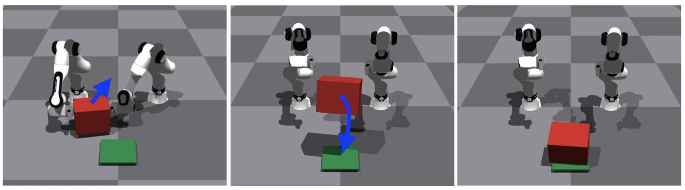
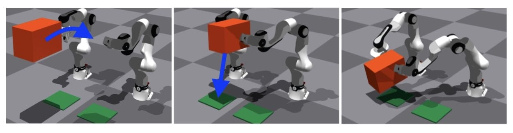
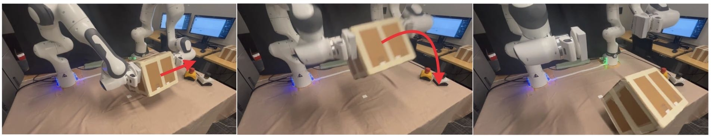
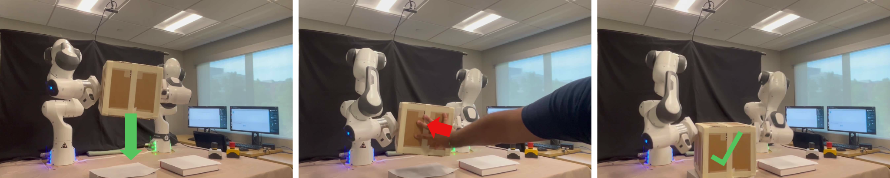

Learning Compliant Dynamic Bimanual Visuomotor Skills from Dynamical Systems with 3D Flow-Matching Policies
We taught a pair of robot arms to pick up a box and throw it at a target, and — separately — to catch a box out of the air, hold it together, and set it down. Both skills are learned in simulation and then run on real Franka arms.
Throwing and catching happen in under a second. There's no time to plan — the robots have to react, coordinate, and commit all at once.
Most robot learning works well for slow, deliberate tasks like picking something up off a table. Fast, physical skills are much harder to teach, because it's difficult to collect real examples of them safely. So instead, we built a training ground in simulation: two Franka arms practice thousands of throws and catches on randomized boxes, and what they learn there is transferred onto the real hardware.
Task APick & throw
Pick it up. Throw it on target.
One learned policy handles the whole motion: gripping the box, swinging both arms together, and releasing at just the right moment to land it on target.
Sees the box through a simulated camera
Learns exactly when to grip and let go
Adjusts its swing for different landing spots

Task BCatch & place
Catch it mid-air. Set it down together.
A second policy tracks an incoming box, closes both arms around it at the right instant, and carries it as one unit to a target shelf.
Predicts where the box will arrive
Closes both arms in sync to trap it
Carries and places it without dropping it

02 / How it works
Practice first. Real senses second.
01
Practice thousands of times in simulation
A simple scripted controller throws and catches randomized boxes over and over in a physics simulator, producing a large library of good technique to learn from.
02
Learn from a privileged expert
A first model learns to imitate that controller, using full knowledge of the box's exact position — information a real robot doesn't have.
03
Learn to work from real senses only
A second, deployable model then learns to reproduce the same behavior using only what the real robot can sense: its own joints and a depth camera.
04
Run live on two robots
The trained model runs on the physical arms, turning its predictions into motor commands many times a second so both arms move together in real time.
04 / Real robots
Off the simulator. Onto the hardware.
Both policies were trained entirely in simulation and then run, unchanged, on two physical Franka arms with a depth camera. The same phases show up on the real hardware — approach, grip, swing or intercept, and release — though real sensors are noisier than simulation, so overall success rates are a bit lower than in simulation. In one robustness check, we pushed and tugged on the box mid-carry: the robots kept their grip and stayed balanced in 4 of 5 trials.

01Pick & throw, on hardware
The real arms grip the box, swing together, and release it toward a marked target.

02Catch & place, on hardware
The real arms intercept the falling box, close around it, and carry it to the target.